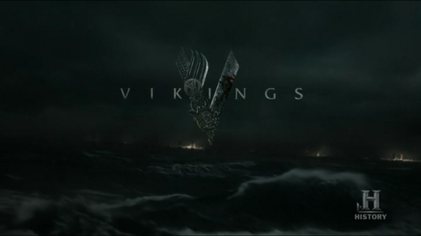

Trivia
Rollo was originally written to be Ragnar's cousin.
The unofficial Vikings Website
The adventures of a Ragnar Lothbrok: the greatest hero of his age. The series tells the saga of Ragnar's band of Viking brothers and his family as he rises to become King of the Viking tribes. As well as being a fearless warrior, Ragnar embodies the Norse traditions of devotion to the gods: legend has it that he was a direct descendant of Odin, the god of war and warriors.
Broadcast
| Season | Episodes | First aired | Last aired | Network |
|---|---|---|---|---|
| 1 | 9 | March 3, 2013 | April 28, 2013 | History Channel |
| 2 | 10 | February 27, 2014 | May 1, 2014 | |
| 3 | 10 | February 19, 2015 | April 23, 2015 | |
| 4 | 20 | February 18, 2016 | February 1, 2017 | |
| 5 | 20 | November 29, 2017 | January 30, 2019 | |
| 6 | 20 | December 4, 2019 | December 30, 2020 | Prime Video |
Characters:
Trivia
Rollo was originally written to be Ragnar's cousin.
Goofs
Most historian hold it very likely that the Norse had contact with the Anglo-Saxons in the later part of the 8th century and the existence of England was widely known to them, unlike how they are portrayed in this show. Contact and trade with Anglo-Saxons is actually a likely explanation for the Vikings ability to locate monasteries such as Lindisfarne.
References: